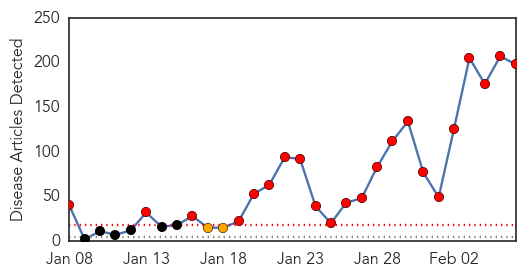
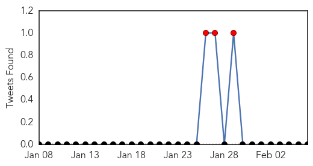
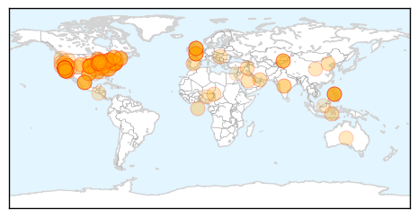
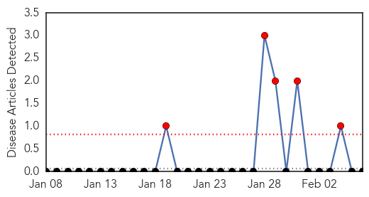

Measles
30-Day Web Trend
22 alerts, 2 warnings

30-Day Twitter Trend
3 alerts, 0 warnings

Article Locations
Article Confidences
Top Articles:
- 0.996
- Measles case count in Ontario rises
- 0.996
- Delaware vaccination rates higher than most
- 0.994
- Deadly Measles is Back in the US, But Why?
- 0.993
- Disneyland Measles Outbreak Isn't Largest in Recent Memory
- 0.993
- After national outbreak, Binghamton University stays prepared for measles
- 0.991
- The measles: a Q&A about the current outbreak and what you need to know
- 0.991
- Montgomery County Health Department provides facts on measles
- 0.990
- Measles hits Illinois daycare center
- 0.990
- Sharp Grossmont Patient Unlikely To Have Measles
- 0.987
- Is It Too Late to Get a Measles Vaccination?
- 0.984
- As Many As 15 Infants at Palatine Daycare...
- 0.984
- Measles Outbreak, Vaccine
- 0.983
- Measles Outbreak: What You Need to Know
- 0.982
- OUR VIEW: Vaccinations can eliminate measles virus
- 0.982
- Sick With Measles, Again
- 0.982
- Measles scare at Sharp Grossmont Hospital ER
- 0.982
- Hamilton health workers prepare as measles appear in Niagara, Toronto
- 0.981
- Measles Outbreak, Measles Vaccine: Top Questions Answered
- 0.980
- Adult tests negative for measles in Reno
- 0.979
- What the anti-vaxxers are getting dangerously wrong
- 0.979
- Measles outbreak discovered at Illinois daycare
- 0.979
- Federal health officials face tough questions on flu vaccine
- 0.979
- Why you should, and shouldn’t, worry about measles
- 0.977
- Test results in suspected Jersey City measles case could take 10 days
- 0.977
- KFVS12 News & Weather Cape Girardeau, Carbondale, Poplar Bluff
- 0.976
- Five children under age of 1 at suburban Chicago day care diagnosed with measles
- 0.976
- Officials: 5 children under age 1 who attend suburban Chicago day care diagnosed with measles
- 0.976
- 5 infants at Illinois day care diagnosed with measles
- 0.975
- Measles outbreak: What you need to know; STGnews Videocast
- 0.975
- 5 infants at Illinois day care diagnosed with measles
- 0.973
- 5 infants at Illinois day care diagnosed with measles
- 0.972
- 5 day care infants diagnosed with measles
- 0.970
- 5 infants at Illinois day care diagnosed with measles
- 0.970
- Should measles show up in Napa, officials say they have a plan
- 0.969
- How bad is measles around the world?
- 0.969
- Nevada health officials update legislators on measles outbreak
- 0.967
- Column: We all have a responsibility to prevent the spread of measles
- 0.967
- Health officials update legislators on measles outbreak
- 0.965
- Health Officials to Brief Nevada Lawmakers on Measles Cases
- 0.965
- How bad is measles around the world?
- 0.962
- Concerns in US about measles grow as 5 new cases diagnosed
- 0.960
- Editorial - Immunization protects the greater population
- 0.960
- Chicago-area day care center requiring measles shots for infants’ caregivers
- 0.959
- Measles vaccine exemptions grow in parts of New Mexico
- 0.958
- California measles cases top 100
- 0.952
- Vaccination still best advise to avoid measles
- 0.951
- Albertans opposed to allowing unvaccinated children in schools
- 0.950
- Daycare at center of new measles outbreak
- 0.950
- Federal health officials face tough questions on flu
- 0.949
- 5 Palatine daycare measles cluster cases confirmed; total 6 in state
Showing top 50 articles...
Top Tweets:
- 0.621
- .@NewsChannel8 See our recent forecasting report infectious disease measles mumps rubella http://t.co/O4JMztgThs
Bubonic Plague
30-Day Web Trend
5 alerts, 0 warnings

30-Day Twitter Trend
0 alerts, 0 warnings

Article Locations

Article Confidences

Top Articles:
-
No articles found for Feb 06, 2015
Top Tweets:
-
No tweets found for Feb 06, 2015